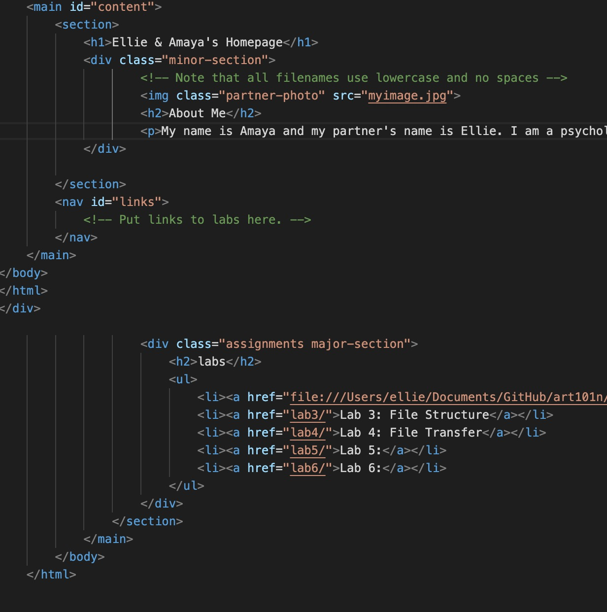

Lab 3: File Structures
The idea of this lab was to further create a local file structure and add index.html files.
Challenges
We had a hard time linking photos and files into the html document. We also had trouble condensing the links to be able to link them into the file.
Results
These are the end results of our coding for the introduction and labs website.
